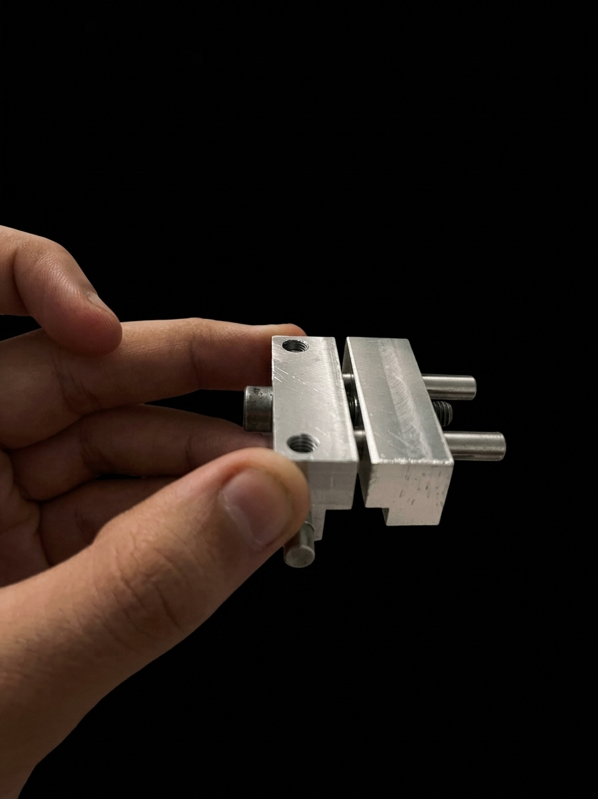

ENGINEERING NOTEBOOK
First Article Fabrication Journal
Making the Vise Stop
Bridgeport Vertical Mill Training & Intentionality
BOOK NO.01
MATERIAL6061-T6 ALUM
TOL.±0.005"

Prompt: “How does intentionality shape your actions? Tell us about a time when it affected your choices, and what the result was?”